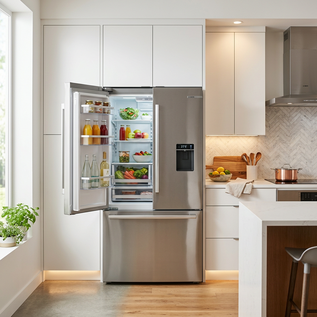
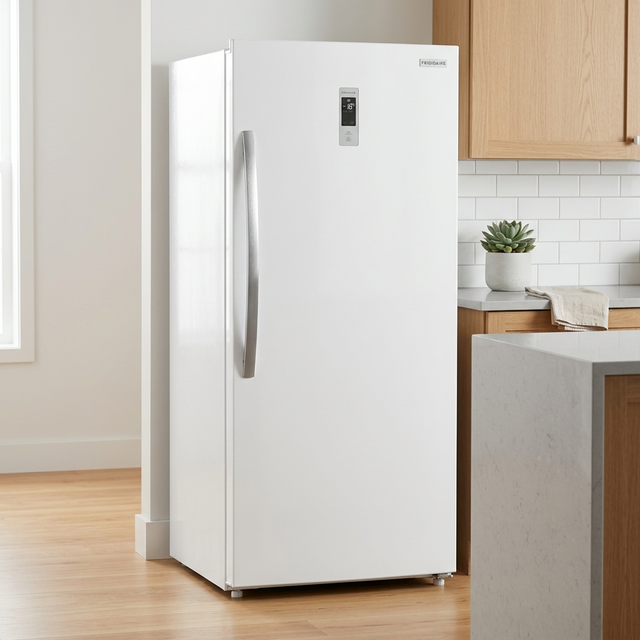
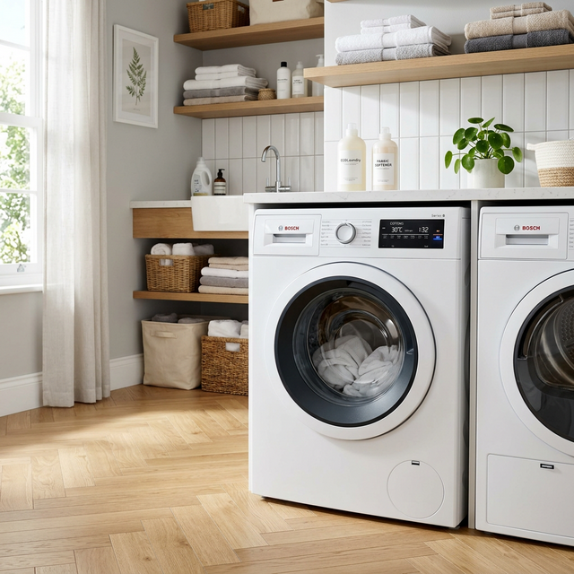
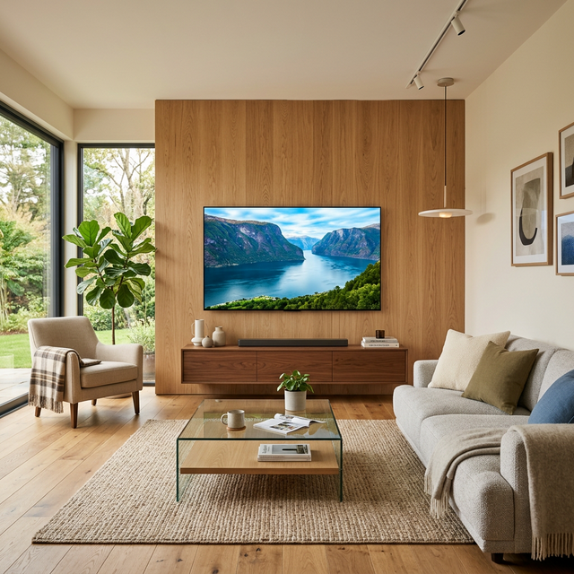

حلول صيانة احترافية وفورية لجميع أجهزة توشيبا (ثلاجات، غسالات، ديب فريزر، شاشات) بأيدي مهندسين خبراء وقطع غيار أصلية 100%.
نقدم خدمة صيانة شاملة لجميع أجهزة توشيبا المنزلية في مكانك بأعلى جودة وأسرع وقت.

تأكد من ترك مسافة 15 سم خلف الثلاجة للتهوية الجيدة، وقم بتنظيف كاوتش الباب بالماء الدافئ لضمان إحكام الغلق.

تجنب فتح باب الديب فريزر بشكل متكرر، ولا تكدس الأطعمة فوق فتحات التهوية الداخلية لضمان توزيع التبريد.

نظف فلتر طلمبة الطرد شهرياً، وقم بعمل دورة خل كل 3 أشهر لإزالة التكلسات والرواسب من الحلة.

لا تستخدم منظفات زجاجية مباشرة على الشاشة، واستخدم قطعة قماش مايكروفايبر جافة وناعمة للتنظيف برفق.
أبرز الاستفسارات التي تهم عملاء توشيبا في مصر.
نعم، جميع قطع الغيار المستخدمة في عمليات الصيانة هي قطع أصلية 100% معتمدة لضمان كفاءة أجهزتكم.
بالتأكيد، نعطي العميل ضماناً معتمداً لمدة تتراوح بين 3 إلى 6 أشهر على قطع الغيار المستبدلة وأعمال الصيانة.
في أغلب الحالات، تتم الصيانة الفورية بالمنزل في نفس اليوم بمجرد فحص المهندس المختص للجهاز وتحديد العطل.
املا بياناتك وسيقوم الدعم الفني بالرد عليك فوراً
نحن متواجدون للرد على استفساراتكم على مدار الساعة.